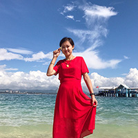

辅导员人气投票结果
推送
知识库
原投票轻应用
罗吉勇
商学院
919票
尹惠敏
核技术与自动化工程学院
913票
张耀元
核技术与自动化工程学院
678票
杨川
能源学院
499票
马昱宇
传播科学与艺术学院
429票
李莜敏
法学院
382票
项颖
管理科学学院

369票
石春林
传播科学与艺术学院
366票
贾龙宇
地球物理学院
358票
范海经
环境与土木工程学院
356票
刘斌
环境与土木工程学院
353票
曾智
商学院
145票